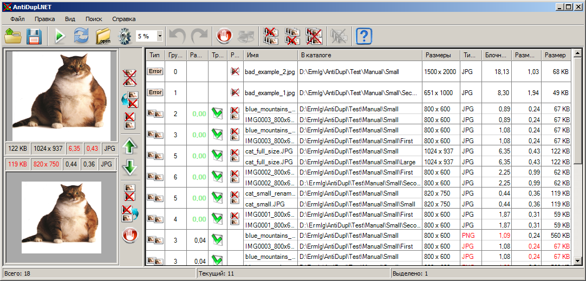
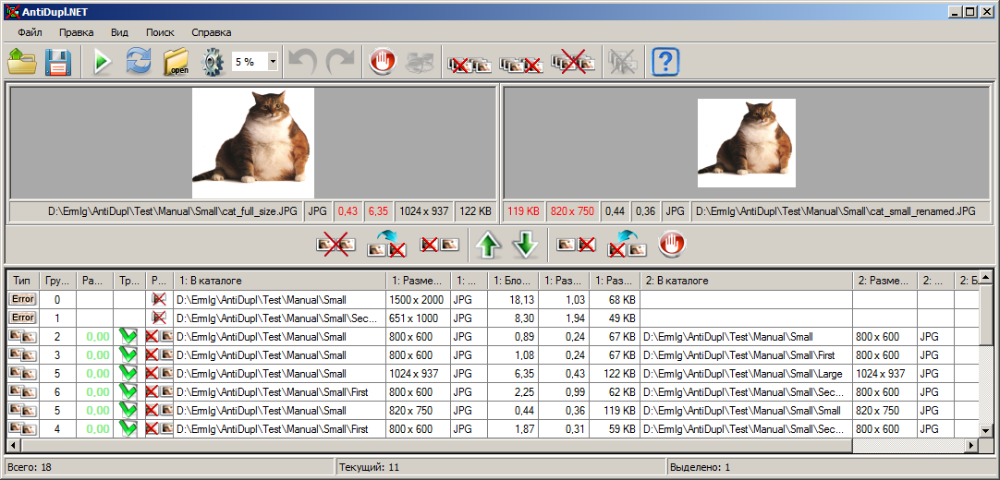
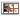

Таблица результатов
Таблица результатов расположена в правой части главного окна для режима просмотра результатов в виде Таблицы вертикальных пар:
или в нижней части главного окна для режима просмотра результатов в виде Таблицы горизонтальных пар:
Переключение ориентации осуществляется при помощи пункта Вид - Режим просмотра результатов главного меню. Таблица результатов предназначена для отображения и обработки результатов поиска программы. Перемещаться между результатами и выделять их можно при помощи мыши и стандартных клавиш (Up, Down, Page Up, Page Down, Home и End) и их комбинаций (Control+A). При этом картинка(и) текущего результата будут отображаться на панели просмотра, а номер текущего результата, число выделенных результатов и их общее количество в строке состояния.
Таблица результатов и в вертикальном и в горизонтальном режиме просмотра включает в себя следующие столбцы:
Тип - в данном столбце отображается тип результата. Это может быть:
или
- Дублирующая пара картинок. При вертикальном режиме просмотра результатов данный тип отображается в виде двойной строки.
- Дефектная картинка.
Группа - при поиске дублирующие пары картинок могут объединяться в группы с похожими результатами. В данном столбце отображается номер такой группы.
Различие - отображает в процентах среднеквадратическую разность содержимого картинок дублирующей пары. Если изображения полностью идентичны, то разность отображается зеленым цветом.
Тип дефекта - показывает тип дефекта картинки. Программа может находить дефекты следующих типов:
- Неизвестный дефект. Это значит что программа не смогла корректно открыть данный файл.
- Отсутствует маркер конца JPEG файла. Как понятно из названия данный тип дефекта возникает, если JPEG файл не дописан до конца. Такое может случаться, например, во время скачивания из интернета при плохом качестве связи.
 - Блочность в файле. В картинке найден эффект блочности (артефакты сжатия) проявляющиеся при сильной степени сжатия в формат JPEG.
Трансформация - тип трансформации, которое нужно совершить над верхним/левым изображением, что бы оно совпало с нижним/правым. Информация данного столбца актуальна при поиске зеркально отраженных и повернутых изображений. Существует восемь типов трансформации:
- Оригинал. Для совпадения не требуется никакая трансформация.
- Повернутый на 90°. Здесь и далее все повороты отсчитываются в направлении против движения часовой стрелки.
- Повернутый на 180°.
- Повернутый на 270°.
- Горизонтально отраженный.
- Горизонтально отраженный и повернутый на 90°.
- Горизонтально отраженный и повернутый на 180° (вертикально отраженный).
- Горизонтально отраженный и повернутый на 270°.
Рекомендация - отображает действие, которое компьютер рекомендует совершить пользователю. Рекомендация дается в случае, когда удается однозначно определить какое изображение из пары лучше или по крайней мере не хуже. В случае полностью одинаковых картинок существует некоторая неопределенность с выбором картинки для удаления. Избежать эту неопределенность можно заданием Путей удаления в окне путей. Тогда компьютер при прочих равных условиях будет рекомендовать для удаления картинку из этих путей. Если же в путях для удаления окажется картинка с лучшим качеством, то будет рекомендовано переместить(переименовать) ее оттуда. Рекомендация может принимать следующие значения:
- Удалить картинку.
или
- Удалить первую картинку.
или
- Удалить вторую картинку.
или
- Заместить вторую картинку первой.
или
- Заместить первую картинку второй.
Следующие столбцы присутствуют только в режиме вертикальной ориентации (в случае дублирующей пары изображений ячейки данных столбцов становятся двойными):
Имя - имя файла с картинкой .
В каталоге - отображает каталог, в котором располагается картинка.
Размеры - размеры изображения (ширина и высота).
Тип картинки - формат файла изображения (BMP, GIF, JPEG, PNG, TIFF, EMF, WMF, EXIF, ICON, JP2 или PSD).
Блочность картинки - показывает блочность картинки выраженную в условных единицах.
Размер - размеры файла картинки.
Дата изменения - дата последнего изменения файла изображения.
А эти столбцы есть только в режиме горизонтальной ориентации:
1: Имя - имя файла с первой картинкой .
1: В каталоге - отображает каталог, в котором располагается первая картинка.
1: Размеры - размеры первого изображения (ширина и высота).
1: Тип картинки - формат файла первого изображения (BMP, GIF, JPEG, PNG, TIFF, EMF, WMF, EXIF, ICON, JP2 или PSD).
1: Блочность картинки - показывает блочность картинки выраженную в условных единицах.
1: Размер - размеры файла первой картинки.
1: Дата изменения - дата последнего изменения файла первого изображения.
2: Имя - имя файла со второй картинкой .
2: В каталоге - отображает каталог, в котором располагается вторая картинка.
2: Размеры - размеры второго изображения (ширина и высота).
2: Тип картинки - формат файла второго изображения (BMP, GIF, JPEG, PNG, TIFF, EMF, WMF, EXIF, ICON, JP2 или PSD).
2: Блочность картинки - показывает блочность картинки выраженную в условных единицах.
2: Размер - размеры файла второй картинки.
2: Дата изменения - дата последнего изменения файла второго изображения.
Отметим, что если картинки дублирующей пары имеют разный тип, то эта информация выделяется красным цветом. Также красным цветом выделяются информация об изображении имеющим меньшие размеры, или занимающей меньше места на диске.
Видимость столбцов таблицы можно настраивать в главном меню в разделе Вид - Выбор столбцов, а их ширина и порядок следования легко регулируется при помощи мыши. Если щелкнуть мышью по заголовку столбца, то проводится сортировка таблицы по содержимому данного столбца. При повторном щелчке, происходит сортировка в обратном направлении. Отметим, что столбец по которому проводилась сортировка и ее направление запоминаются, и при повторном поиске результаты будут отсортированы аналогичным образом.
Если пользователь нажмет правой клавишей мыши по таблице результатов, то вызовется контекстное меню, в котором можно обработать выделенные результаты. Заметим, что функциональность контекстного меню продублирована на панели инструментов. По нажатии клавиш Control+C, выделенные строки результатов будут скопированы в буфер обмена.